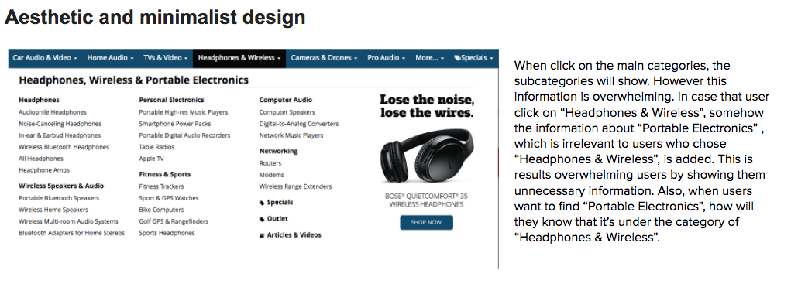
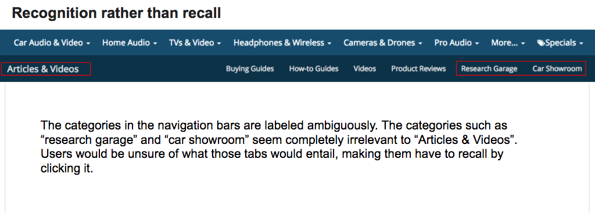
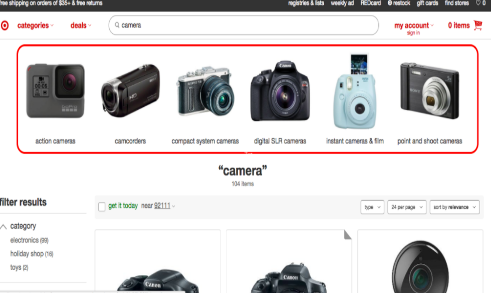
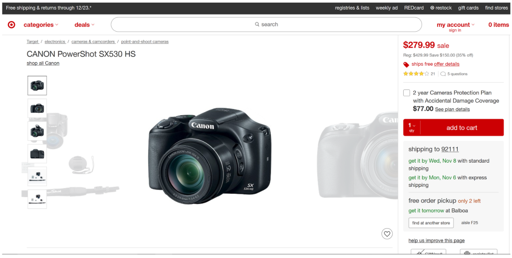

Crunchfield
This is a usability analysis project on the site - Crunchfield. We used Nielsen's 10 heuristics to assess the usability of the site on both desktop and mobile site. (Group project)
Works

Although this is a group project, we first worked indivisually to ensure our evaluation is independent and unbiased. Then we shared and disscussed our findings together in a goup. This impoves the effectiveness of the evaluation.
~Indivisual Evaluation~
First, I played around in the website while taking screen shots of some confusing pages or pitides I found.
Then I browse the site carefully while paying attention to each one of the Nielsen's 10 Heuristics to see if there is any violation. In this process, I tested on some extrem cases, such as buying out of stock itemes, login with nonexisting accounts, etc.
Here are some examples:
 ~Group Evaluation~
We shared our findings and disscussed their violation types. We also brain stormed possible redesigns.
Evaluation results:
~UX Comperation~
We compared the user experience of searching product on Crutcfield and Traget.
We focused on a)initial results page, b) filtering options, c) layout of product information
a)Initial Results Page:
-vs-
After searching, users should want to see the results, but there are a lot of irrelevant information presented on the first screen. The “Free 3-day Shipping”, which is placed at the most eye catching position on the result page is completely irrelevant to the search or result. Also, it is rare that after search, users go to help seccion without even look at the result products. Therefore The “Need help?” is unnecessary or misplaced.
The subcategory selection tremendously helps users who are not expert in cameras to narrow or select what they want more intuitively. The subcategory section also functions as a little guide of introducing the different types of cameras, which provides more options for the novice user without overwhelming them by the hundreds of products they do not know the difference of.
b)Filtering Options:
-vs-
Crunchfield's filters are very limited and would still leave the user with a broad result. It doesn’t offer more detailed filters such as resolution, screen size, etc. for their more experienced users. Considering that Crutchfield specializes in selling technology, it would be expected that their target community are experienced users who know what they want and would like to have these specific filters to narrow down their options even further.
Target provides a wide range of very specific filtering options. This really caters to the experienced shoppers who are looking for a particular product. These defined filters are also great for shoppers who aren’t sure about what they want because it gives them the tools to explore the different kinds of components they can begin thinking about when purchasing a camera.
c)Product Information:
-vs-
On the product page, almost half of the page has nothing to do with the product that users selected. Especially the “Free 3-day shipping” title, which is just overwhelming the page by showing users the informations that they do not need at this moment; it is placed at wrong time and wrong place. Again, the “Why shop with us?” section is also irrelevant to the product (information at wrong time and place).
When directed to the product page, users see right away a large image of the product. There are no other potential distractors such as calls to action which could potentially irritate users. Even the menus at the top are very minimalistic, only displaying two words, but clearly meant to expand if the user wishes to do that.
© 2015 Youxi Li